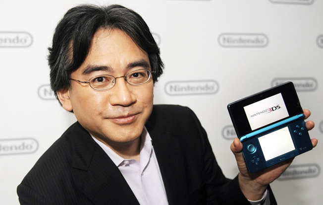

Satoru Iwata
Hommage à l'ancien PDG de Nintendo

1959-2015
Quelques séries de jeux ou il a participé notamment :
«Sur ma carte, je suis PDG. Dans ma tête, je suis développeur de jeux. Mais dans mon cœur, je suis un gamer.»
Satoru Iwata
Voir la page Wikipédia